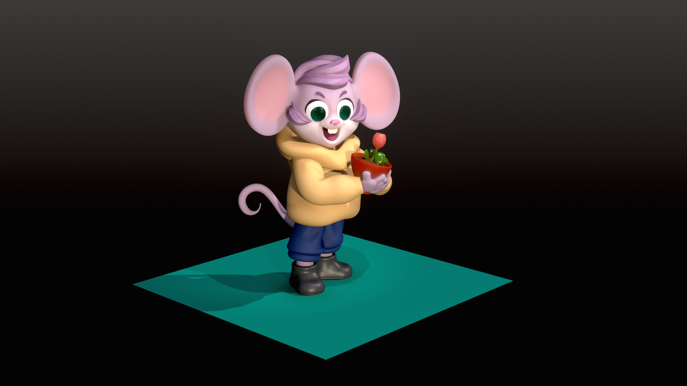
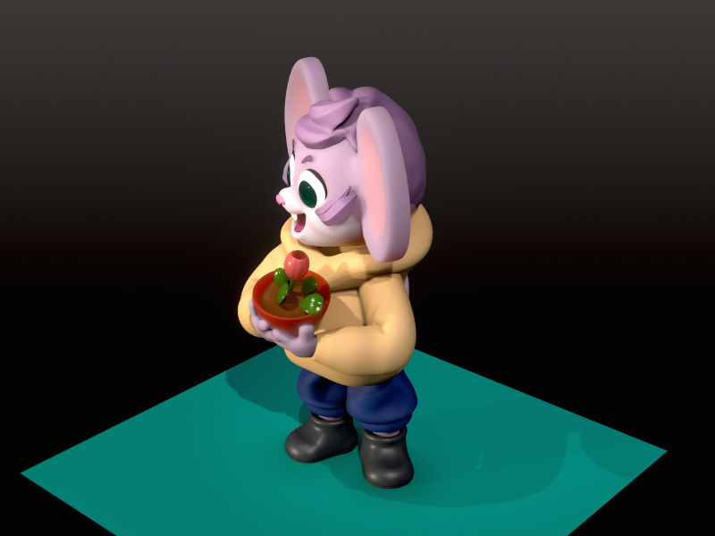
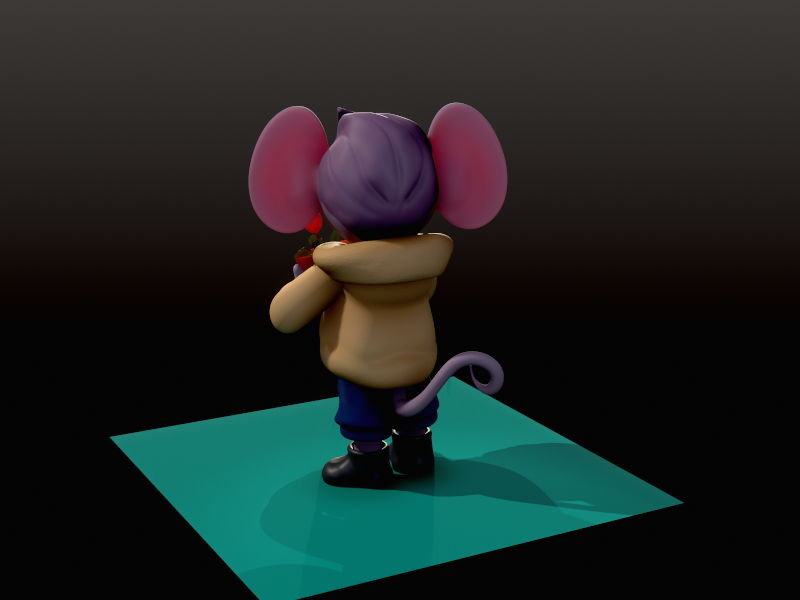
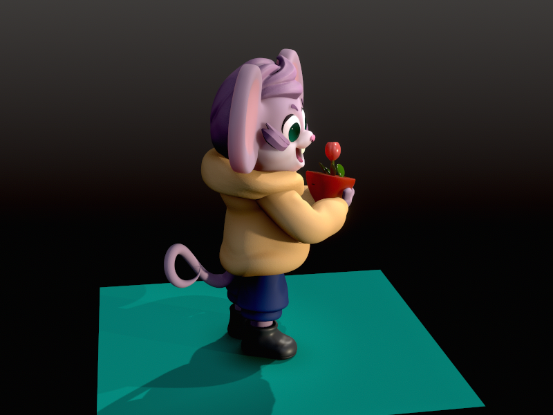

← Work & Projects
Chibi Mouse
2026

An advanced character sculpt in Nomad Sculpt, a clear step up from basic blocking. The work moved across scales: roughing out broad forms first, then refining smaller areas with dedicated brushes and masking without disrupting surrounding surfaces.
The central challenge was mesh management: working on individual parts as separate objects, then merging and optimising vertex count at the right stage to keep the sculpt clean and workable, rather than forcing everything into a single dense mesh. The project also ran the full pipeline through to a finished image, covering scene lighting, painting directly on the model, and post-processing the render.


